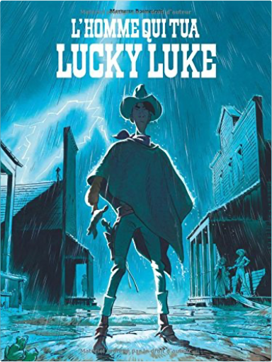
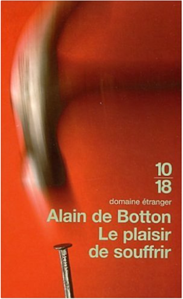

Books
Movies
Albums
Videogames
Games
BD
BD Camille
Blu-ray
Business
Camille
Comics
Cooking
Lego
Manga
Pauline
Photography
Sport
Star Wars
T'choupi
Travel
TV Shows
Un livre dont vous êtes le héro
Vinyl
Walt Disney
7
8
9
10
11
soupes toutes fraîches et gaspachos
anne-catherine bley
Les aventures de Blake et Mortimer, tome 29 : Huit heures à Berlin
José-Louis Bocquet , Jean-Luc Fromental, Antoine Aubin

lucky luke, tome 0 - l'homme qui tua lucky luke
matthieu bonhomme
convaincre en moins de 2 minutes
nicholas boothman
4.5

le plaisir de souffrir
alain de botton
le langage de l'image
rené bouillot
4
7 histoires d'animaux de petit ours brun
danièle bour
dans la maison de petit ours brun
danièle bour
petit ours brun aime les bisous
danièle bour
petit ours brun et le coucher
danièle bour
petit ours brun et le pot
danièle bour
petit ours brun répond au téléphone
danièle bour
7
8
9
10
11


 Made with Delicious Library Made with Delicious Library
Made with Delicious Library Made with Delicious Library